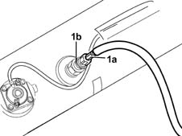
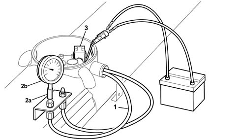
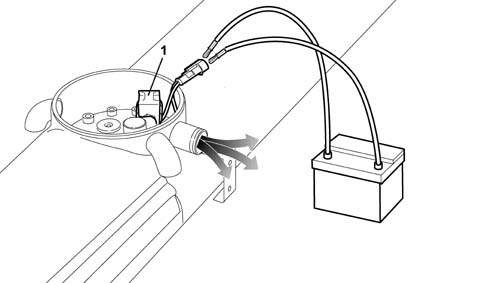
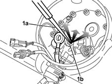

1043A08 lpg tank check seal
- Path
- Procedures > 10 ENGINE UNIT > 1043 LGP TANK AND PIPES > 1043A gpl tank > 1043A08 lpg tank check seal
- Kind
- repair procedure (removal / refitting; the operation number is the code)
- Applies to
- engines: 1.6 16v; all production periods; only with equipment: GPOWER
- Interactive page
- https://sloeber94.github.io/elrnDB-fMltpl/en/#/2891493
Applies to: engines: 1.6 16v; all production periods; only with equipment: GPOWER and Euro 3
1. Introduce compressed air into the tank through the connector (1a) on the 80% valve (1b) until the minimum internal pressure reached ios 10 Atmosphere.
 | Name | Country |
|---|---|---|
1a | Connector for 80 valve% | 1.870.831.000 |

Applies to: engines: 1.6 16v; all production periods; only with equipment: GPOWER and Euro 3
To determine the pressure value inside the tank, proceed as described below.
1. Connect the LPG supply pipe to the pump.
2. Using a special connector (2a), fit a pressure gauge (2b) to the supply pipe by the intermediate bracket.
| Name | Country |
|---|---|---|
2a | Fitting for pressure gauge | 1.870.832.000 |
3. Electrically connect the solenoid valve coil to a battery, a suitable distance away, using special cables. In this way the solenoid valve will open allowing the escape of air; use the pressure gauge tomeasure the pressure inside the tank which should be at least 10 Atmosphere, if this is not the case, continue to introduce compressed air.
Once the pressure reading is correct, disconnect the cables from the pressure and remove the pressure gauge.

Applies to: engines: 1.6 16v; all production periods; only with equipment: GPOWER and Euro 3
Cover the components on the tank, even if they are not directly involved in the dismantling procedure, with a foam solution (BRC cod 90AV99000052 or a similar product) to detect any leaks.
If leaks are found, check that the component is correctly fitted before discharging the pressure in the tank, as described below; then repeat the leakage test.
If the result of the leakage test is favourable, before refitting the tank on the vehicle, discharge the pressure inside following the instructions given below.
1. Electrically connect the solenoid valve coil to a battery, a suitable distance away, using special cables. In this way the solenoid valve will open allowing the escape of air from the lower part of the tank; keep the coil connected until the whistling of the air coming out of the tank can no longer be heard.

Applies to: engines: 1.6 16v; all production periods; only with equipment: GPOWER and Euro 3
1. Remove the solenoid valve coil supply cables, then, use a tracer point (1a) on the return valve (1b) to completely drain the air pressure in the upper part of the tank.

Applies to: engines: 1.6 16v; all production periods; only with equipment: GPOWER and Euro 3
Once the operation of discharging the pressure is completed, connect the supply and return pipes, complete with wiring 1043B28 lpg delivery and return pipes from tank to intermediate connector complete with submerged pump wiring r r with lpg tank removed .
Fit the valve unit cover 1043A54 cover of gpl tank valve unit with submerged fuel pump ecu r r with gpl tank removed .
Fit the tank on the vehicle 1043A06 gpl tank complete with submerged fuel tank and valve unit r r .
Refill the tank with 5 - 10 litres of LPG and carry out the leak detection procedure 1043A04 gpl system and pipes check for leaks .
Topics linked from this page (4)
- 1043A04 gpl system and pipes check for leaks
- 1043A06 gpl tank complete with submerged fuel tank and valve unit r r
- 1043A54 cover of gpl tank valve unit with submerged fuel pump ecu r r with gpl tank removed
- 1043B28 lpg delivery and return pipes from tank to intermediate connector complete with submerged pump wiring r r with lpg tank removed
Topics that link to this page (5)
- 1043A24 lpg tank 80 percent filling valve r r with lpg tank removed
- 1043A57 lpg fuel system submerged pump r r with tank and valve unit cover removed
- 1043A59 SOLENOID VALVE on LPG 'system submerged electric pump - R.R. with LPG tank and valve unit cover removed
- 1043A62 float controlling lpg level guage r r
- 1043B28 lpg delivery and return pipes from tank to intermediate connector complete with submerged pump wiring r r with lpg tank removed